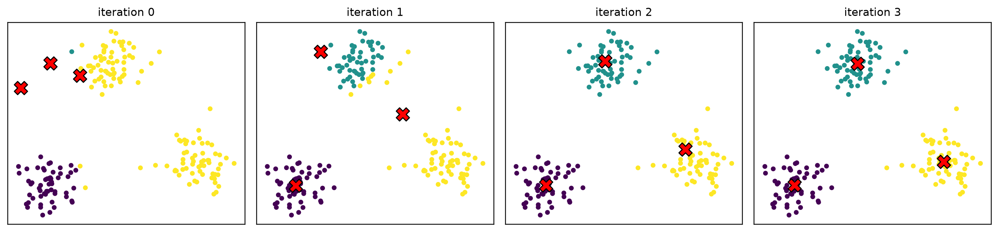
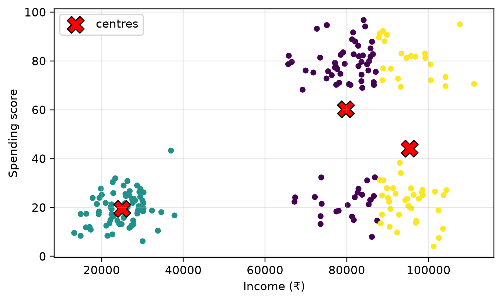
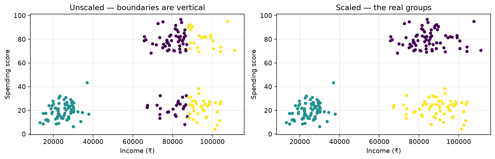
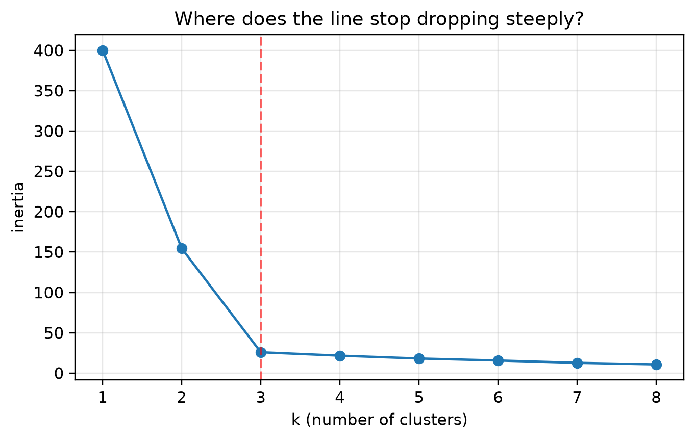
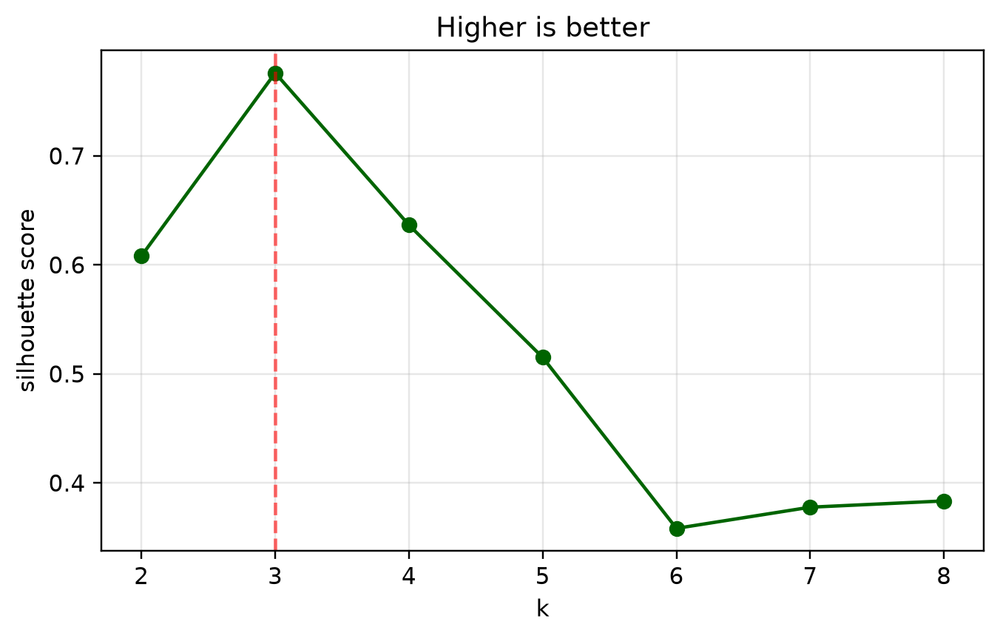
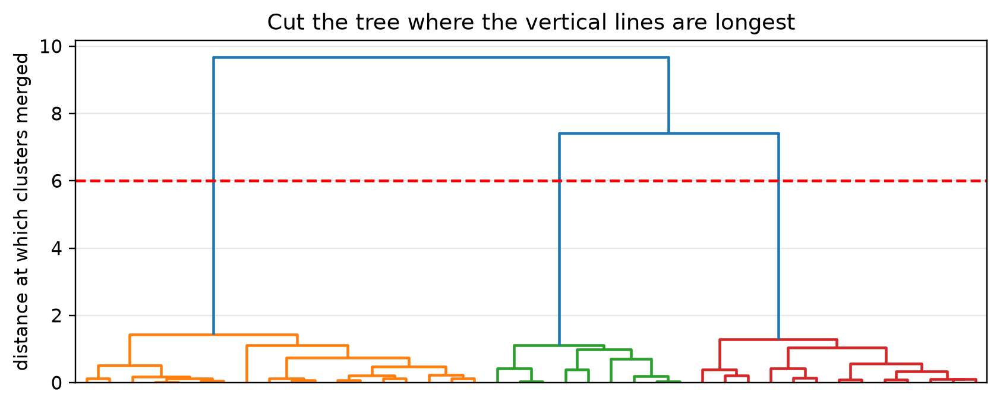
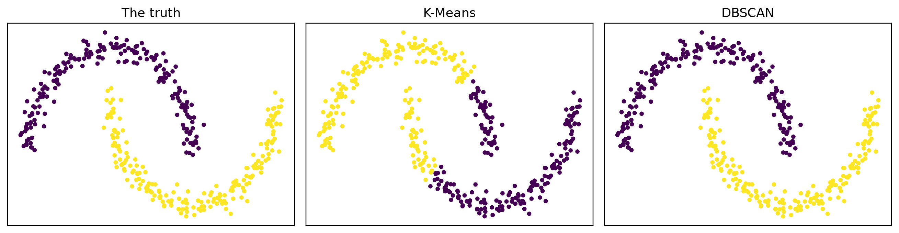

flowchart TB
S1["<b>1.</b> Pick k. Place k centres at random"]
S2["<b>2.</b> Assign every point to its<br/>nearest centre"]
S3["<b>3.</b> Move each centre to the average<br/>of the points assigned to it"]
S4{"Did anything<br/>move?"}
S1 --> S2 --> S3 --> S4
S4 -- yes --> S2
S4 -- no --> S5["<b>Done.</b> The centres have settled"]
11 Session 10 — Unsupervised Learning and Clustering
Learning without labels · K-Means · Choosing k · Hierarchical · DBSCAN · Profiling
Note
This chapter finds structure in data that has no answer column at all.
Assumed knowledge: Session 5 — scaling, and why distance-based methods need it. Session 8 — scatter plots. Session 9 — the fit / predict shape of a scikit-learn model.
The one idea to take away: there is no right answer to check against. That changes everything: you cannot measure accuracy, so you must justify your result instead. This chapter is mostly about how to justify one.
11.1 🎯 Learning outcomes
By the end of this chapter you can:
- Explain how unsupervised learning differs from supervised learning.
- Describe the K-Means algorithm step by step.
- Show why clustering must be done on scaled data.
- Choose k using an elbow plot and a silhouette score, and say what to do when they disagree.
- Use hierarchical clustering and DBSCAN, and say when each beats K-Means.
- Turn clusters into a description a business can act on.
11.2 How this chapter is organised
| Part | Question it answers |
|---|---|
| A — Learning without labels | What can you learn with no answer key? |
| B — K-Means | How does the standard method actually work? |
| C — Choosing k | How many groups are there? |
| D — When K-Means fails | What do I use instead? |
12 Part A — Learning without labels
12.1 1. Unsupervised learning
Unsupervised learning finds structure in data that has no target column. Nobody has labelled anything; the algorithm has only the features.
| Supervised (Session 9) | Unsupervised (this chapter) | |
|---|---|---|
| Data | X and y |
X only |
| Goal | predict y for new rows |
find structure in X |
| Can you measure accuracy? | yes — compare to the true y |
no — there is no true answer |
| Fails by | predicting badly | producing groups that mean nothing |
Three families:
| Family | Finds | Covered in |
|---|---|---|
| Clustering | groups of similar rows | this chapter |
| Dimensionality reduction | a smaller set of columns | Session 6 (PCA) |
| Association rules | things that occur together | Session 16 |
Tip🧠 Analogy — sorting the laundry
Nobody told you the categories. You tip the basket out and start making piles — darks, whites, towels — because things in a pile resemble each other.
Somebody else would make different piles. By fabric, perhaps, or by owner. Neither is wrong. That is unsupervised learning: several defensible answers, and no marking scheme.
12.2 2. What clustering is for
Clustering puts rows into groups so that rows in a group are more similar to each other than to rows in other groups.
| Use | What the clusters become |
|---|---|
| Customer segmentation | marketing groups with different offers |
| Document grouping | topics |
| Image compression | a small palette of representative colours |
| Anomaly detection | whatever does not fit any cluster |
| Exploration | the first look at data nobody has labelled |
“Similar” means “close together” — so clustering is a distance calculation, and every warning from Session 5 about scale applies with full force.
13 Part B — K-Means
13.1 3. How K-Means works
K-Means splits data into k groups by repeatedly moving k centre points until they settle.
You must choose k yourself. The algorithm cannot tell you how many groups exist — that is the whole difficulty, and Part C is about it.
13.1.1 Demo 1 — watching the centres settle, step by step
import numpy as np, matplotlib.pyplot as plt
rng = np.random.default_rng(41)
points = np.vstack([rng.normal([2, 2], .6, (60, 2)),
rng.normal([7, 3], .6, (60, 2)),
rng.normal([4, 7], .6, (60, 2))])
centres = np.array([[1., 6.], [2., 7.], [3., 6.5]]) # deliberately bad starting positions
fig, axes = plt.subplots(1, 4, figsize=(13, 3.1))
for step, ax in enumerate(axes):
distances = np.linalg.norm(points[:, None] - centres[None], axis=2)
labels = distances.argmin(axis=1) # step 2: assign
ax.scatter(points[:, 0], points[:, 1], c=labels, s=12, cmap="viridis")
ax.scatter(centres[:, 0], centres[:, 1], c="red", marker="X", s=150, edgecolor="k")
ax.set_title(f"iteration {step}", fontsize=10); ax.set_xticks([]); ax.set_yticks([])
for j in range(3): # step 3: move
if (labels == j).any():
centres[j] = points[labels == j].mean(axis=0)
plt.tight_layout(); plt.show()
print("Started at:", [[1., 6.], [2., 7.], [3., 6.5]], "— all three bunched in one corner")
print("Ended at: ", centres.round(1).tolist())
print("The true centres were [2,2], [7,3], [4,7].")
Started at: [[1.0, 6.0], [2.0, 7.0], [3.0, 6.5]] — all three bunched in one corner
Ended at: [[1.9, 2.0], [4.1, 7.0], [7.0, 3.0]]
The true centres were [2,2], [7,3], [4,7].13.1.2 Demo 2 — the same thing with scikit-learn
import numpy as np, pandas as pd, matplotlib.pyplot as plt
from sklearn.cluster import KMeans
rng = np.random.default_rng(42)
customers = pd.DataFrame(np.vstack([
rng.normal([25_000, 20], [6_000, 8], (70, 2)), # modest income, low spending
rng.normal([85_000, 80], [9_000, 8], (70, 2)), # high income, high spending
rng.normal([88_000, 22], [9_000, 7], (60, 2)), # high income, low spending
]), columns=["income", "spending_score"])
km = KMeans(n_clusters=3, random_state=0, n_init=10)
customers["cluster"] = km.fit_predict(customers[["income", "spending_score"]])
plt.scatter(customers["income"], customers["spending_score"],
c=customers["cluster"], cmap="viridis", s=18)
plt.scatter(km.cluster_centers_[:, 0], km.cluster_centers_[:, 1],
c="red", marker="X", s=220, edgecolor="k", label="centres")
plt.xlabel("Income (₹)"); plt.ylabel("Spending score"); plt.legend()
plt.show()
print(customers.groupby("cluster").agg(
n=("income", "size"), avg_income=("income", "mean"), avg_spend=("spending_score", "mean")
).round(0))
n avg_income avg_spend
cluster
0 72 79750.0 60.0
1 70 25000.0 19.0
2 58 95306.0 44.0Note n_init=10: K-Means starts from random positions and can settle into a poor arrangement, so it runs ten times from different starts and keeps the best.
13.2 4. Scale first — always
K-Means measures straight-line distance. An unscaled column with big numbers decides every cluster on its own.
This is Session 5’s lesson, and clustering is where it does the most damage — because there is no accuracy score to warn you that the answer is wrong.
13.2.1 Demo 3 — the same customers, clustered with and without scaling
import matplotlib.pyplot as plt
from sklearn.cluster import KMeans
from sklearn.preprocessing import StandardScaler
X = customers[["income", "spending_score"]]
unscaled_labels = KMeans(3, random_state=0, n_init=10).fit_predict(X)
scaled = StandardScaler().fit_transform(X)
scaled_labels = KMeans(3, random_state=0, n_init=10).fit_predict(scaled)
fig, ax = plt.subplots(1, 2, figsize=(11, 3.6))
ax[0].scatter(X["income"], X["spending_score"], c=unscaled_labels, cmap="viridis", s=16)
ax[0].set_title("Unscaled — boundaries are vertical")
ax[1].scatter(X["income"], X["spending_score"], c=scaled_labels, cmap="viridis", s=16)
ax[1].set_title("Scaled — the real groups")
for a in ax: a.set_xlabel("Income (₹)"); a.set_ylabel("Spending score")
plt.tight_layout(); plt.show()
print(f"income ranges over {X['income'].max()-X['income'].min():>9,.0f}")
print(f"spending ranges over {X['spending_score'].max()-X['spending_score'].min():>9,.0f}")
print("\nUnscaled, an income gap of 1,000 outweighs the entire spending scale.")
print("The unscaled clusters split people purely by income — the vertical bands.")
print(f"\nAgreement between the two clusterings: "
f"{(pd.crosstab(unscaled_labels, scaled_labels).max(axis=1).sum() / len(X)):.0%}")
income ranges over 97,852
spending ranges over 93
Unscaled, an income gap of 1,000 outweighs the entire spending scale.
The unscaled clusters split people purely by income — the vertical bands.
Agreement between the two clusterings: 77%
Warning⚠️ Unscaled clustering produces confident nonsense
No error is raised. The clusters look tidy, the chart is colourful, and the segments are wrong — they encode one column and ignore the rest. Always put StandardScaler in front of KMeans.
14 Part C — Choosing k
14.1 5. The elbow method
Inertia is the total squared distance from every point to its own centre. More clusters always means lower inertia — with one cluster per point it reaches zero — so you cannot simply minimise it.
The elbow method looks for the point where the improvement stops being worth it.
14.1.1 Demo 4 — the elbow
import matplotlib.pyplot as plt
from sklearn.cluster import KMeans
from sklearn.preprocessing import StandardScaler
Xs = StandardScaler().fit_transform(customers[["income", "spending_score"]])
ks = range(1, 9)
inertias = [KMeans(k, random_state=0, n_init=10).fit(Xs).inertia_ for k in ks]
plt.plot(ks, inertias, "o-")
plt.axvline(3, color="red", ls="--", alpha=.6)
plt.xlabel("k (number of clusters)"); plt.ylabel("inertia")
plt.title("Where does the line stop dropping steeply?")
plt.show()
print(f"{'k':>3} {'inertia':>10} {'improvement':>13}")
for i, (k, v) in enumerate(zip(ks, inertias)):
imp = "" if i == 0 else f"{(inertias[i-1]-v)/inertias[i-1]:>12.1%}"
print(f"{k:>3} {v:>10.1f} {imp:>13}")
k inertia improvement
1 400.0
2 154.4 61.4%
3 25.8 83.3%
4 21.6 16.3%
5 18.1 16.3%
6 15.6 13.6%
7 12.8 18.4%
8 10.8 15.0%Read the improvement column: large gains up to k=3, then much smaller ones. That is the elbow.
14.2 6. The silhouette score
The silhouette score measures, for each point, how much closer it is to its own cluster than to the next nearest one. It runs from −1 to +1.
| Score | Means |
|---|---|
| near +1 | comfortably inside its own cluster |
| near 0 | on the boundary — could belong to either |
| negative | closer to a different cluster — probably misassigned |
Unlike inertia, it does not automatically improve with more clusters, so you can compare values across different k directly.
14.2.1 Demo 5 — silhouette across k
import matplotlib.pyplot as plt
from sklearn.cluster import KMeans
from sklearn.metrics import silhouette_score
ks = range(2, 9)
scores = [silhouette_score(Xs, KMeans(k, random_state=0, n_init=10).fit_predict(Xs)) for k in ks]
plt.plot(list(ks), scores, "o-", color="darkgreen")
best = list(ks)[int(np.argmax(scores))]
plt.axvline(best, color="red", ls="--", alpha=.6)
plt.xlabel("k"); plt.ylabel("silhouette score"); plt.title("Higher is better")
plt.show()
for k, s in zip(ks, scores):
print(f"k = {k}: silhouette {s:.3f}{' ← best' if k == best else ''}")
k = 2: silhouette 0.608
k = 3: silhouette 0.776 ← best
k = 4: silhouette 0.637
k = 5: silhouette 0.515
k = 6: silhouette 0.358
k = 7: silhouette 0.378
k = 8: silhouette 0.383Both methods point at the same answer here. They do not always.
14.2.2 Demo 6 — when the silhouette score is wrong
import numpy as np
from sklearn.cluster import KMeans
from sklearn.metrics import silhouette_score
from sklearn.datasets import make_moons
# Two interleaved crescents. The true structure is obviously 2 groups.
moons, true_labels = make_moons(n_samples=400, noise=0.06, random_state=0)
for k in [2, 3, 4]:
labels = KMeans(k, random_state=0, n_init=10).fit_predict(moons)
print(f"k = {k}: silhouette {silhouette_score(moons, labels):.3f}")
agree = (KMeans(2, random_state=0, n_init=10).fit_predict(moons) == true_labels)
print(f"\nAt k=2, K-Means agrees with the true crescents for "
f"{max(agree.mean(), 1-agree.mean()):.0%} of points.")
print("The score prefers k=2, and yet K-Means still cuts the crescents in the wrong")
print("place — because it can only draw straight boundaries. A good score does not")
print("mean a good clustering.")k = 2: silhouette 0.489
k = 3: silhouette 0.428
k = 4: silhouette 0.461
At k=2, K-Means agrees with the true crescents for 76% of points.
The score prefers k=2, and yet K-Means still cuts the crescents in the wrong
place — because it can only draw straight boundaries. A good score does not
mean a good clustering.
Warning⚠️ Clustering always returns clusters
Ask K-Means for four groups in pure random noise and you will get four groups, each with a centre and a colour, and a chart that looks meaningful.
import numpy as np
from sklearn.cluster import KMeans
from sklearn.metrics import silhouette_score
noise = np.random.default_rng(7).normal(size=(400, 2)) # no structure whatsoever
for k in [2, 3, 4]:
print(f"k = {k} on pure noise: silhouette {silhouette_score(noise, KMeans(k, random_state=0, n_init=10).fit_predict(noise)):.3f}")k = 2 on pure noise: silhouette 0.314
k = 3 on pure noise: silhouette 0.326
k = 4 on pure noise: silhouette 0.321Those are not zero. The elbow and the silhouette are evidence, not proof. The real test is whether the clusters mean something to somebody who knows the business.
14.3 7. Profiling: turning clusters into an answer
A cluster number is not a deliverable. cluster = 2 means nothing to a marketing team. The deliverable is a description.
14.3.1 Demo 7 — from cluster numbers to named segments
import pandas as pd
from sklearn.cluster import KMeans
from sklearn.preprocessing import StandardScaler
X = customers[["income", "spending_score"]]
customers["segment"] = KMeans(3, random_state=0, n_init=10).fit_predict(
StandardScaler().fit_transform(X))
profile = customers.groupby("segment").agg(
customers=("income", "size"),
median_income=("income", "median"),
median_spend=("spending_score", "median"),
).round(0)
profile["share"] = (profile["customers"] / len(customers) * 100).round(1).astype(str) + "%"
print(profile)
print("\nNow name them, and say what to do:")
overall_income = customers["income"].median()
overall_spend = customers["spending_score"].median()
for seg, row in profile.iterrows():
rich = "high" if row["median_income"] > overall_income else "modest"
spends = "high" if row["median_spend"] > overall_spend else "low"
name = {("high","high"): "Best customers",
("high","low"): "Untapped — money but not spending",
("modest","low"): "Budget-conscious",
("modest","high"): "Enthusiasts on a budget"}[(rich, spends)]
print(f" Segment {seg}: {name:<34} ({row['share']} of customers, "
f"₹{row['median_income']:,.0f} income)") customers median_income median_spend share
segment
0 70 83864.0 79.0 35.0%
1 70 25734.0 19.0 35.0%
2 60 89965.0 23.0 30.0%
Now name them, and say what to do:
Segment 0: Best customers (35.0% of customers, ₹83,864 income)
Segment 1: Budget-conscious (35.0% of customers, ₹25,734 income)
Segment 2: Untapped — money but not spending (30.0% of customers, ₹89,965 income)That last block is the actual output of a clustering project. “Segment 1” became “high income, not spending — worth a targeted offer”, which somebody can act on tomorrow.
15 Part D — When K-Means fails
15.1 8. Hierarchical clustering
Hierarchical clustering builds a tree. It starts with every point as its own cluster and repeatedly merges the two closest, until everything is one cluster. You then cut the tree wherever you like.
Its advantage over K-Means: you do not have to choose k in advance. You build the tree once and read off any number of clusters from it.
15.1.1 Demo 8 — the dendrogram
import matplotlib.pyplot as plt
from scipy.cluster.hierarchy import dendrogram, linkage, fcluster
from sklearn.preprocessing import StandardScaler
sample = customers[["income", "spending_score"]].sample(40, random_state=1)
Z = linkage(StandardScaler().fit_transform(sample), method="ward")
plt.figure(figsize=(9, 3.4))
dendrogram(Z, no_labels=True)
plt.axhline(6, color="red", ls="--")
plt.ylabel("distance at which clusters merged")
plt.title("Cut the tree where the vertical lines are longest")
plt.show()
for cut in [2, 3, 4]:
labels = fcluster(Z, cut, criterion="maxclust")
print(f"cutting for {cut} clusters → sizes {np.bincount(labels)[1:].tolist()}")
cutting for 2 clusters → sizes [18, 22]
cutting for 3 clusters → sizes [18, 9, 13]
cutting for 4 clusters → sizes [7, 11, 9, 13]15.2 9. DBSCAN
DBSCAN groups points that are packed closely together and labels everything else as noise. It has two strengths K-Means does not:
- clusters can be any shape, not just round blobs
- points that belong to no cluster are marked as noise rather than forced into one
You do not give it k. You give it eps (how close counts as “near”) and min_samples (how many neighbours make a dense region).
15.2.1 Demo 9 — the crescents, where K-Means could not win
import matplotlib.pyplot as plt
from sklearn.cluster import KMeans, DBSCAN
from sklearn.datasets import make_moons
moons, truth = make_moons(n_samples=400, noise=0.06, random_state=0)
km_labels = KMeans(2, random_state=0, n_init=10).fit_predict(moons)
db_labels = DBSCAN(eps=0.2, min_samples=5).fit_predict(moons)
fig, ax = plt.subplots(1, 3, figsize=(12, 3.2))
ax[0].scatter(*moons.T, c=truth, cmap="viridis", s=10); ax[0].set_title("The truth")
ax[1].scatter(*moons.T, c=km_labels, cmap="viridis", s=10); ax[1].set_title("K-Means")
ax[2].scatter(*moons.T, c=db_labels, cmap="viridis", s=10); ax[2].set_title("DBSCAN")
for a in ax: a.set_xticks([]); a.set_yticks([])
plt.tight_layout(); plt.show()
km_acc = max((km_labels == truth).mean(), 1 - (km_labels == truth).mean())
db_acc = max((db_labels == truth).mean(), 1 - (db_labels == truth).mean())
print(f"K-Means matches the true crescents: {km_acc:.0%}")
print(f"DBSCAN matches the true crescents: {db_acc:.0%}")
print(f"DBSCAN labelled {(db_labels == -1).sum()} points as noise (label -1)")
K-Means matches the true crescents: 76%
DBSCAN matches the true crescents: 100%
DBSCAN labelled 0 points as noise (label -1)15.2.2 Demo 10 — choosing between the three
print(f"{'':<22} {'K-Means':<22} {'Hierarchical':<22} {'DBSCAN'}")
rows = [
("must choose k?", "yes", "no — cut the tree", "no"),
("cluster shapes", "round blobs only", "flexible", "any shape"),
("handles noise", "no — forces a group", "no", "yes, explicitly"),
("speed on big data", "fast", "slow (n² memory)", "medium"),
("clusters of very different density", "poor", "fair", "poor"),
("main use", "the default first try","exploring structure","odd shapes, outliers"),
]
for label, a, b, c in rows:
print(f"{label:<22} {a:<22} {b:<22} {c}") K-Means Hierarchical DBSCAN
must choose k? yes no — cut the tree no
cluster shapes round blobs only flexible any shape
handles noise no — forces a group no yes, explicitly
speed on big data fast slow (n² memory) medium
clusters of very different density poor fair poor
main use the default first try exploring structure odd shapes, outliers15.2.3 ❓ Check yourself
Q1. What makes clustering unsupervised?
- It is less accurate.
- There is no target column, so there is no correct answer to compare against.
- It runs without training.
Q2. Why does inertia always fall as k rises?
- A bug in scikit-learn.
- More centres means every point is nearer to one, until with one centre per point inertia is zero.
- It does not.
Q3. You cluster income (in rupees) and age (in years) without scaling. What happens?
- Nothing important.
- Income decides every cluster, because its numbers are thousands of times larger.
- The code raises an error.
Q4. Your data forms two interlocking crescents. Which method?
- K-Means with k=2.
- DBSCAN.
- K-Means with k=4.
Q5. The silhouette score for your clustering is 0.61, and the business says the segments make no sense. What do you conclude?
- The business is wrong; 0.61 is a good score.
- The clusters are mathematically separated but not meaningful — go back and change the features, not the score.
- Increase k until the score improves.
NoteAnswers
A1 — (b). Which is why this chapter measures justification rather than accuracy.
A2 — (b). This is exactly why the elbow method looks for a bend rather than a minimum.
A3 — (b). Demo 3 showed the vertical bands this produces.
A4 — (b). Demo 9 measured K-Means at 76% and DBSCAN at essentially perfect.
A5 — (b). Demo 6’s noise experiment gave respectable silhouette scores on data with no structure at all. The score cannot tell you whether a grouping is meaningful.
16 🎯 Tasks
Note✏️ Practise
Task 1 — Choose k and defend it. For the customers data, produce both the elbow plot and the silhouette curve. State your k and give two reasons.
Task 2 — Prove scaling matters. Cluster the customers unscaled and scaled, and report what percentage of customers end up in a different group.
Task 3 — Name the segments. Run Demo 7 with k=4 and write a one-sentence description and one recommended action for each segment.
Task 4 — Cluster noise. Generate 300 random points with no structure, run K-Means with k=3, and plot the result. Write one sentence on what this teaches you about trusting a cluster chart.
NoteSolutions
import numpy as np, pandas as pd
from sklearn.cluster import KMeans
from sklearn.preprocessing import StandardScaler
rng = np.random.default_rng(42)
cust = pd.DataFrame(np.vstack([
rng.normal([25_000, 20], [6_000, 8], (70, 2)),
rng.normal([85_000, 80], [9_000, 8], (70, 2)),
rng.normal([88_000, 22], [9_000, 7], (60, 2)),
]), columns=["income", "spending_score"])
# Task 2 — how many customers change group when you scale?
raw = KMeans(3, random_state=0, n_init=10).fit_predict(cust)
scl = KMeans(3, random_state=0, n_init=10).fit_predict(StandardScaler().fit_transform(cust))
best_match = pd.crosstab(raw, scl).max(axis=1).sum()
print(f"Task 2 — {1 - best_match/len(cust):.0%} of customers land in a different segment")
print(" when the data is scaled. Any campaign built on the unscaled segments")
print(" would target the wrong people.")
# Task 4 — clusters found in data that has none
noise = rng.normal(size=(300, 2))
lab = KMeans(3, random_state=0, n_init=10).fit_predict(noise)
print(f"\nTask 4 — K-Means split pure noise into groups of {np.bincount(lab).tolist()}.")
print(" A cluster chart always looks convincing. The chart is not the evidence.")Task 2 — 23% of customers land in a different segment
when the data is scaled. Any campaign built on the unscaled segments
would target the wrong people.
Task 4 — K-Means split pure noise into groups of [114, 89, 97].
A cluster chart always looks convincing. The chart is not the evidence.
Tip✅ Before you move on